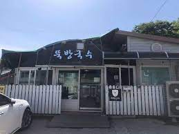
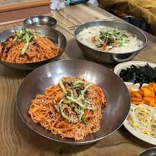
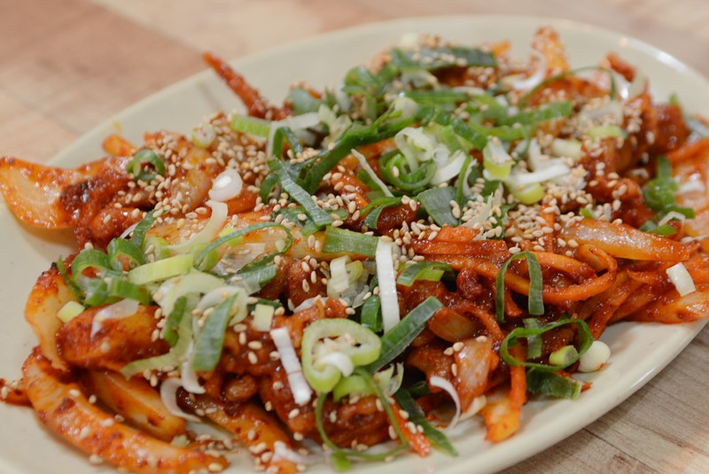

지인의 초대로 인해 담양에 놀러갔다.
대나무를 언제봤는지 기억조차 나지않았다.
대숲을 천천히 걸으며 바쁘게 살아왔던 나를 되돌아 보았다.
그리고 사람들이 왜 자신의 속마음을 대숲에 묻어두고 나오는지 조금은 알 수 있었다.
바쁜 일상에 치어 사는 사람들이 꼭 한번 와봤으면 하는 장소다.
뚝방국수

담양 뚝방국수 입구
담양에는 국수거리가 있다.
인터넷에는 많은 가게가 소개되어 있지만 이 가게가 제일 로컬맛집 같았다.

메인 메뉴인 비빔국수와 잔치국수
메인메뉴는 국수집답게 잔치국수와 비빔국수가 있었다.
비빔국수는 조금 매운맛이 강했지만 맛이 좋았고
잔치국수는 특별한 맛은 아니었지만 맛있는 잔치국수의 표본이었다.

특이하게 사이드 메뉴가 닭발이 있었다
사이드메뉴로 닭발이 있었다. 조금 의외라고 생각했다. 닭발을 메인으로 먹으러 가는 일은 있어도
다른 메인을 먹으러가서 사이드로 닭발을 먹는 일은 보통 없으니까.
맛이 너무 좋았다. 무뼈닭발인데 간이 그렇게 쎄지도 않았고 딱 사이드메뉴에 어울렸다.
계란말이도 있었지만 그저 평범했다.